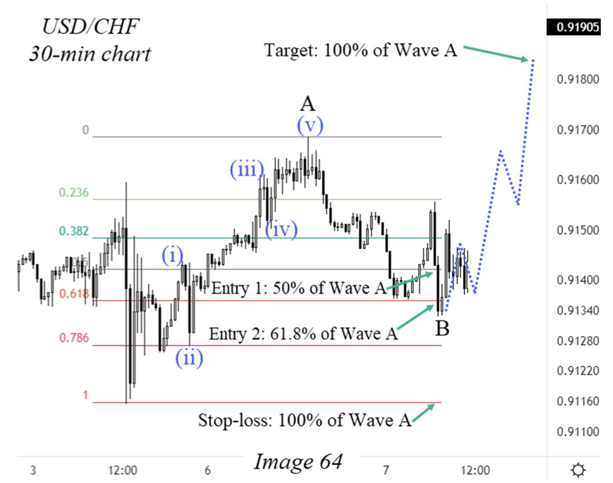
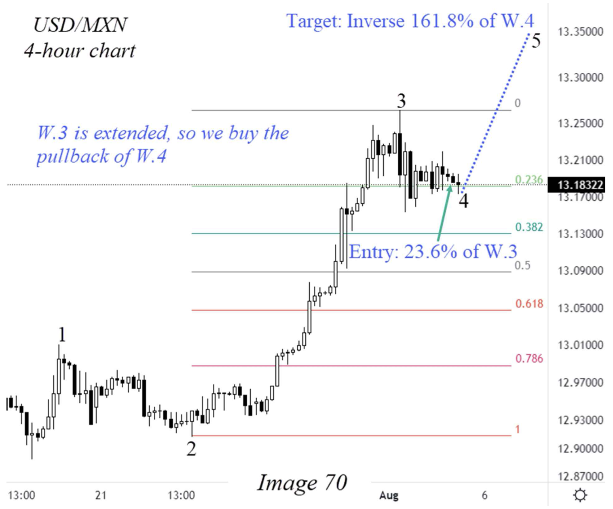

CHAPTER VI · PDF tr. 91–104
ELLIOTT WAVE APPLICATION IN REAL TRADES Các ví dụ áp dụng trong sách
Đọc trang 91–104 trong PDF, theo các mục dưới đây, rồi làm 10 câu hỏi của riêng chương này. Nội dung dưới đây là tóm lược đọc hiểu, không thay thế toàn chương gốc.
Example #1 — Aggressive Buy Trade USD/CHF Example #2 — Aggressive Sell Trade USD/CAD Example #3 — Aggressive Buy Trade EUR/AUD Example #4 — Conservative Buy Trade USD/MXN Example #5 — Conservative Sell Trade USD/JPY Example #6 — Conservative Buy Trade USD/CAD Example #7 — Aggressive Sell Trade AUD/CAD Trắc nghiệm (10 câu)
Example #1 — Aggressive Buy Trade USD/CHF PDF tr. 91–92
Case wave C: A có năm sóng con; entry 50/61,8% A, stop gốc A, target 100% A từ cuối B. Phân biệt nến trong ảnh và đường chấm dự phóng.

Steve Sinclair · Image 64 · PDF tr. 91 · Trích hình để đối chiếu phần đang học; nhãn gốc của tác giả. Example #2 — Aggressive Sell Trade USD/CAD PDF tr. 92–94
Sau nhịp điều chỉnh tăng và nhịp giảm mạnh, tác giả chuẩn bị sell trên nhịp hồi của wave 1; dùng các target chiếu từ cuối 2.
Example #3 — Aggressive Buy Trade EUR/AUD PDF tr. 94–96
Case tiếp tục dùng kế hoạch wave C, hai entry theo A và target từ cuối B. Đối chiếu tiêu đề với nội dung vì tên cặp trong sách không nhất quán.
Example #4 — Conservative Buy Trade USD/MXN PDF tr. 96–98
Wave 3 mạnh dẫn tới kế hoạch vào pullback 4 tại 23,6% của 3, stop 50% của 3 và target inverse 161,8% của 4.

Steve Sinclair · Image 70 · PDF tr. 97 · Trích hình để đối chiếu phần đang học; nhãn gốc của tác giả. Example #5 — Conservative Sell Trade USD/JPY PDF tr. 98–99
Ví dụ sell sau nhịp hồi: trang 99 vẫn dùng hai entry 50/61,8% của 1 dù tiêu đề conservative; giữ đúng chi tiết case, không sửa âm thầm cho khớp chương V.
Example #6 — Conservative Buy Trade USD/CAD PDF tr. 100–102
Case dùng hồi 50% A, stop gốc A và target 100% A từ cuối B, với xu hướng lớn được tác giả mô tả là tăng.
Example #7 — Aggressive Sell Trade AUD/CAD PDF tr. 102–104
Sau năm sóng tăng, tác giả chờ A rồi B để chuẩn bị C giảm; hai entry theo A, stop gốc A, target 100% A từ cuối B.
Lưu ý khi đối chiếu nguồn Example #3 ghi EUR/AUD trong tiêu đề nhưng đoạn văn ghi EURNZD. Câu hỏi chỉ kiểm tra kế hoạch, không bắt chọn một tên cặp là chắc chắn đúng. PDF tr. 94–95 Example #5 mang tên conservative nhưng dùng hai mức entry; câu hỏi chỉ rõ đang hỏi case trang 99. PDF tr. 98–99 Đây là ví dụ được tác giả chọn sau sự kiện; kết quả được kể trong sách không tự cung cấp tỷ lệ thắng hay bằng chứng hiệu quả tổng quát. PDF tr. 91–104 Trắc nghiệm chương VI Chỉ hỏi nội dung thuộc trang 91–104. Chọn một đáp án mỗi câu rồi chấm; câu chưa trả lời tính là chưa đúng. Lời giải có trang kiểm tra lại.
1. Example #1 USD/CHF nhắm giao dịch wave nào? PDF tr. 91–92 · Xem hình liên quan trong bài
A. Wave 2 B. Wave C C. Wave X2
2. Target của Example #1 được lấy thế nào? PDF tr. 91–92
A. 50% wave 3 B. Inverse 161,8% wave 4 C. 100% A chiếu từ cuối B
3. Example #2 USD/CAD dùng chân nào để đo hai entry 50/61,8%? PDF tr. 93
A. Wave 1 B. Wave 4 C. Wave B
4. Example #3 dùng stop tại đâu? PDF tr. 95
A. Cuối wave 5 B. Gốc wave A C. Đỉnh RSI
5. Example #4 USD/MXN chọn mức entry nào? PDF tr. 97 · Xem hình liên quan trong bài
A. 50% wave A B. 61,8% wave 1 C. 23,6% wave 3
6. Stop và target của Example #4 là gì? PDF tr. 97
A. Stop 50% wave 3; target inverse 161,8% wave 4 B. Stop gốc A; target 100% A C. Không stop; target RSI 70
7. Riêng Example #5 USD/JPY, sách ghi bao nhiêu mức entry? PDF tr. 99
A. Một mức 38,2% wave 3 B. Hai mức 50% và 61,8% wave 1 C. Ba mức RSI
8. Example #6 USD/CAD dùng entry nào? PDF tr. 101
A. 23,6% wave 3 B. 61,8% wave B C. 50% wave A
9. Example #7 AUD/CAD chờ chân nào để xác định vị trí chuẩn bị trade C? PDF tr. 103
A. Wave B B. Wave X2 C. Wave 5 mới
10. Example #7 dùng target nào? PDF tr. 103–104
A. Inverse 161,8% wave 4 B. 100% A chiếu từ cuối B C. 50% wave 3
Chấm bài và xem giải thích Làm lại chương này Tải câu trả lời JSON In chương
Chưa chấm.
Lựa chọn được lưu riêng cho khóa theo chương trên trình duyệt này.
Cần bật JavaScript để chấm và lưu câu trả lời. Bạn vẫn có thể đọc chương và mở PDF gốc.
Điểm là kết quả đọc hiểu tài liệu, không phải chứng nhận đếm sóng hay hiệu quả giao dịch.
← Chương V Conclusion →